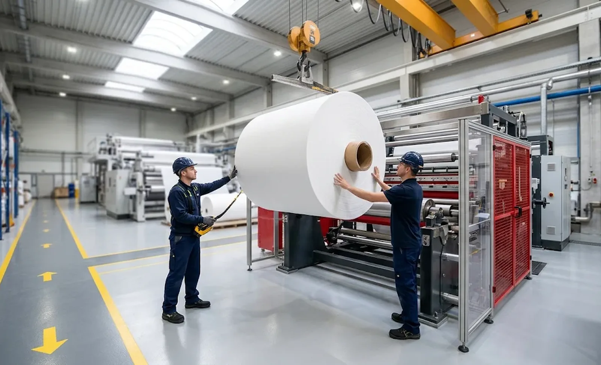
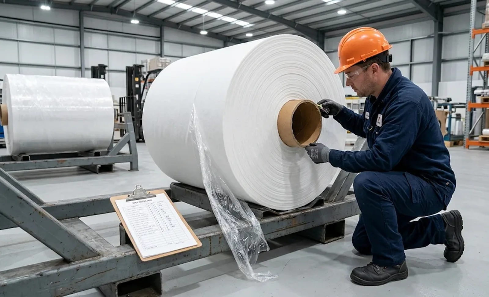

Published November 14, 2026 | By HDPTH Technical Editorial Team

Buyers evaluate slitter rewinders on speed, width, tension control and cutting quality, and rightly so. Yet between the upstream process and the unwind stand sits a workflow that no specification sheet captures: the parent roll has to be received, inspected, staged, wrapped, unwrapped, transported and loaded — repeatedly, every shift, by people working around a multi-tonne rotating mass. On a hygiene materials line consuming one parent roll every forty minutes, the handling sequence is performed more than thirty times a day, and each cycle adds minutes that machine top speed can never recover. Handling is also where a surprising share of start-of-roll waste is born: dented cores, telescoped edges and damaged outer wraps all arrive at the unwind stand as web breaks waiting to happen. This guide walks through the handling chain the way a buyer should — as a specified, testable part of the line rather than an afterthought delegated to whoever owns the forklift.
Why parent roll handling decides line efficiency
Roll change time is charged to the machine no matter whose budget it sits in. Take a realistic case: a parent roll of 1,600 mm diameter and 1.8 tonnes, a line at 400 m/min, and a handling sequence that involves a walk to the storage area, a crane call, a slow approach to the unwind, chuck alignment, wrap removal and threading. Fifteen minutes per roll is common on lines that never measured it. A nonwoven line running three shifts and consuming ten parent rolls per shift therefore spends two and a half hours per shift — nearly ten percent of capacity — simply replacing rolls. Halving that sequence recovers more output than a ten percent speed increase would, and costs a fraction of the price. Handling also drives waste: poor loading damages the core and the outer layers, and the damage resurfaces as tension fluctuations, web breaks and reject material in the first hundred metres of every roll. When buyers compare two machines on OEE rather than speed, the one with the better roll-handling plan usually wins.
Incoming parent roll quality and inspection
A slitter rewinder cannot compensate for a bad parent roll, so the handling chain must begin with inspection at the gate. A workable incoming routine takes five minutes per roll and covers the essentials: packaging intact, diameter and width match the delivery papers, core type and inner diameter match the machine chucks, end surfaces are flat and concentric without telescoping or dishing, and the batch label feeds the traceability system. Two defects deserve special attention. Crushed cores — the signature of rolls stacked too high in transit or storage — cause chuck slippage and diameter mis-tracking on the unwind drive, which shows up later as tension instability nobody can explain. Telescoped or dished ends, usually from rough transport handling, produce web wander and edge-trim hunting that no web guide can fully correct. Photograph and document every defect before the roll enters production: it is the only way to keep supplier quality conversations factual, and it protects the machine acceptance data from being contaminated by incoming material problems.
Loading systems: overhead crane, gantry hoist and floor pick-up
Three loading architectures dominate, and the right choice follows from roll weight and building constraints. Overhead handling — a bridge crane on runway rails, or a dedicated beam over the unwind stand with an electric hoist and a core probe or plate clamp — suits heavy rolls, keeps the floor clear of carts, and positions the roll with precision onto shaftless arms or onto a stub inserted into the core. Its costs are building headroom, a certified runway or structure, and operator training for suspended-load work. Gantry and jib hoists offer a lighter version of the same idea for smaller lines. Floor pick-up stands move the mechanism into the unwind stand itself: the arms reach down, take the roll from a low cart or pallet, and lift it into the running position, eliminating crane dependency entirely — the practical answer in low-ceiling buildings and leased halls where no structure may be added. The trade-offs are stand complexity and a weight ceiling, typically well below what an overhead crane handles. Whatever the architecture, the buyer’s questions are the same: maximum roll weight and diameter at full production, chucks or arms matched to the core, powered lateral adjustment for width changes, and a defined, repeatable roll position every cycle.

Staging, storage and roll preparation
Between acceptance and loading, the parent roll waits — and storage conditions during that wait are a hidden specification. Rolls should be staged in the order of consumption, wrapped against dust until the moment of use, supported on racks or cradles rather than stacked directly on the floor, and kept within the humidity band the material tolerates, because nonwoven rolls gain or lose moisture at the exposed ends and the edges then run differently through the slitters. Preparation happens at staging too: removing stretch wrap, extracting core plugs and end caps, and attaching the roll label to the batch record belong here, not in the machine’s stopping time. Layout matters as much as equipment. The roll path from storage to unwind stand should be short, level and free of doorways; a route that crosses a pedestrian aisle forces slow, escorted movements and quietly adds minutes to every roll change. Plants that dedicate a staging position within a few metres of the unwind — one roll waiting, inspected and unwrapped, while its predecessor runs — routinely achieve roll-change times that others consider impossible without automation.
Roll-to-roll transitions and automation levels
Handling requirements scale with the transition pattern the production mix demands. A line that stops for every roll change needs competent manual or hoist-assisted loading and little else. A line that must run non-stop — turret unwind stands, zero-speed or flying splices — adds a second parent roll staged and positioned while the first is still running, which doubles the handling demand and removes the option of casual manual work around an automatic splice sequence. Between these poles sit intermediate levels: powered roll carts that shuttle rolls from staging to the unwind, automatic core chuck engagement that removes the alignment step, and roll diameter presets transferred from the label or the recipe system so threading starts with correct data. Buyers should map their production plan onto this ladder before quoting, because the automation level is decided in the machine scope, not retrofitted cheaply afterwards. The right question is not “how automatic should the handling be?” but “how many roll changes per shift, at what roll weight, with how many operators?” — the numbers choose the level.
Specifying parent roll handling in a machine order
Handling is bought in the requirement specification like any other machine function. Five clauses cover it. First, a data clause: the heaviest and largest parent roll — weight, diameter, width, core ID and type — stated explicitly, with the loading system sized against it, including a margin for future formats. Second, a layout clause: the roll path from storage to unwind drawn on the floor plan, with staging position and clearances agreed before the machine is built around them. Third, a performance clause: a guaranteed roll-change time at production roll weight, measured and repeated during the FAT with the handling equipment that will actually ship. Fourth, a safety clause: suspended-load procedures, guarding around moving arms, emergency stops reachable from the loading position, and conformity of any supplied lifting equipment with the applicable lifting directives. Fifth, a documentation clause: load rating certificates, crane or hoist inspection records, and operator training material for the handling sequence. Lines specified this way treat the first metre before the machine as part of the machine — and their production statistics show it.
Related guides extend this picture: the Shafted vs Shaftless Unwind for Slitter Rewinders covers how the unwind architecture shapes roll loading and changeover, and the Slitter Rewinder Core Quality Specification: Buyer’s Guide explains why core condition decides how well any loading system works. To see these principles applied across a machine range, review the HDPTH high-speed slitting machines series.
Need a Handling Chain That Matches Your Rolls?
Send HDPTH your parent roll weights, diameters and production pattern. Our application engineers will propose the loading system, staging layout and roll-change procedure we would build into the line — and verify the roll-change time in the FAT protocol before the order is placed.
Submit Your Project InquiryFrequently asked questions
What is parent roll handling on a slitter rewinder?
Everything that happens between a finished parent roll leaving the upstream process and the web threading up on the slitter rewinder: receiving and inspection, staging and storage, transporting the roll to the unwind stand, loading it onto the core chucks or shaftless arms, removing wrap film and core plugs, and setting the roll diameter data. It is the front end of the converting workflow, and on most lines it is also where avoidable minutes are lost at every roll change.
Overhead crane or floor pick-up: which loading system should a buyer choose?
It depends on roll weight, floor space and the roll path from storage to machine. Overhead cranes and gantry hoists suit heavy rolls above about one tonne and keep the floor clear, but they need building headroom and a certified lifting point or structure. Floor pick-up unwind stands let the stand itself reach down, take the roll from a low cart or pallet and lift it into the chucks, which removes crane dependency and suits low-ceiling plants. Heavy nonwoven parent rolls generally justify overhead handling; mid-weight rolls in constrained buildings favour floor pick-up.
What should be checked when a parent roll arrives?
Outer and inner packaging condition, roll diameter and width against the delivery note, core condition and type, an end-surface inspection for crushed or dished edges, and the material identity and batch label against the traceability system. Damaged cores, telescoped ends and crushed packaging should be documented and photographed before the roll enters production, because defects discovered later are attributed to the slitter rewinder rather than the incoming roll.
How does parent roll handling affect uptime and waste?
Roll change time is charged to the machine either way: a two-tonne parent roll that takes fifteen minutes to stage, load and thread replaces fifteen minutes of production on every roll. Handling that dents the core, telescopes the edges or drops the roll produces web breaks and trim waste at the start of each roll. On a line consuming multiple parent rolls per shift, disciplined handling and a properly matched loading system typically recover more capacity than a modest increase in machine top speed.
How should handling equipment be specified with a new machine order?
State the heaviest and largest parent roll — weight, diameter, width and core type — and require the supplier to quote the matching loading system as part of the machine scope, whether overhead beam, gantry hoist or floor pick-up stand. Ask for the roll path drawn from storage to unwind, the time guarantee for a roll change at production weight, the safety measures around suspended and moving rolls, and the load rating certificates for any lifting equipment delivered with the line.